금속재료산업기사 (2014-09-20 기출문제)
1과목: 금속재료
1. 7:3 황동에 Fe 2%와 소량의 Sn, Al을 첨가한 합금은?
- 저먼실버(German Silber)
- 문쯔메탈(Muntz Motal)
- 두라나메탈(역문 Motal)
- 틴 브론즈(Tin Bronze)
(정답률: 79%)

2. 극저탄소 마텐자이트를 시효석출에 의하여 강인화 시킨 강은?
- 두랄루민
- 마르에이징
- 콘스탄탄
- 하이드로날륨
(정답률: 72%)
3. 재결정된 금속의 입자 크기를 옳게 설명한 것은?
- 가공도가 작을수록 크다.
- 가열시간이 길수록 작다.
- 가열온도가 높을수록 작다.
- 가공 전 결정입자가 크면 재결정 후 결정입도가 작다.
(정답률: 67%)
4. 동(Cu)계 함유베어링(오일리스 베어링)의 주요 조성으로 옳은 것은?
- CU-Ti-Ni
- Cu-Ta-Al
- Cu-S-Cr
- Cu-Sn-C
(정답률: 50%)
5. 금속의 공통적 성질을 설명한 것 중 틀린 것은?
- 수은을 제외하고 상온에서 고체이다.
- 열적 전기적 부도체이다.
- 가공성이 풍부하다.
- 금속적 광택이 있다.
(정답률: 91%)
6. 전기 방식용 양극재료, 도금용, 다이캐스팅용 등에 많이 사용되며 용융점이 약 420℃인 것은?
- Zn
- Be
- Mg
- Al
(정답률: 79%)
7. 탄소의 함량이 0.025 이하의 순철의 종류가 아닌 것은?
- 목탄철
- 전해철
- 암코철
- 카아보닐철
(정답률: 78%)
8. 분말야금의 특징을 설명한 것 중 틀린 것은?
- 절삭공정을 생략할 수 있다.
- 다공질재료의 제조가 가능하다.
- 고 융점 금속부품 제조가 적합하다.
- 서로 용해하여 융합되지 않는 합금의 제조는 불가능하다.
(정답률: 78%)
9. 수소저장합금에 대한 설명으로 틀린 것은?
- 에틸렌을 수소화할 때 촉매로 쓸 수 있다.
- 저장된 수소를 이용할 때에는 금속수소화물에서 방출 시킨다.
- 수소가 방출되면 금속수소화물은 원래의 수소저장합금으로 되돌아간다.
- 수소를 흡장할 때 수축하고, 열에는 약하여 고온에서는 결정화하여 전혀 다른 재료가 되어 버린다.
(정답률: 82%)
10. 철강의 5대 원소에 해당되지 않는 것은?
- S
- Si
- Mn
- Mg
(정답률: 94%)
11. 주철의 일반적 특성을 설명한 것 중 옳은 것은?
- 가단주철은 회주철을 열처리하여 만든다.
- 구상흑연주철은 백주철을 탈탄하여 강에 가깝게 한 주철이다.
- 회주철은 파면이 회색으로 조주성과 절삭성이 우수하여 주물용으로 사용된다.
- 백주철은 C, Si 분이 많고 Mn 분이 적어 C가 흑연상태로 유리되어 파면이 흰색이다.
(정답률: 63%)
12. 켈밋(kelmet)이 주로 사용되는 용도는?
- 탈산제
- 베어링
- 내화제
- 피복첨가물
(정답률: 86%)
13. 상온에서 열팽창계수가 매우 작아 표준자, 섀도우마스크, IC기판 등에 사용되는 36%Ni-Fe 합금은?
- 인바(Invar)
- 퍼멀로이(Permalloy)
- 니칼로이(Nicalloy)
- 하스텔로이(Hastelloy)
(정답률: 91%)
14. 합금강에 첨가할 때 탄화물을 형성하여 결정립의 크기를 제어하고, 기계적 성질을 향상 시키는 원소는?
- Pb
- Ti
- Cu
- S
(정답률: 71%)
15. 금속의 상변태와 관련된 설명 중 틀린 것은?
- 동소변태는 결정구조의 변화이다.
- 순철에서 약 910℃ 및 1400℃에서 동소변태가 일어난다.
- 자기변태에서는 일정한 온도 범위 안에서 급격하고 비연속적인 변화가 일어난다.
- 온도가 높아짐에 따라 고체가 액체 또는 기체로 변하는 대부분의 금속원소에서 볼 수 있는 상태의 변화이다.
(정답률: 71%)
16. 잔류자속밀도가 작으며 발전기, 전동기 등의 철심재료에 가장 적합한 강은?
- 규소강(silicon steel)
- 자석강(magnetic steel)
- 불변강(invariab steel)
- 자경강(self hardening steel)
(정답률: 70%)
17. 인발가공(drawing)에 대한 설명으로 옳은 것은?
- 판재를 펀치와 다이(die)의 구멍을 통하여 압출하여 성형하는 방법이다.
- 소재를 다이(die)의 구멍을 통하여 압출하여 성형하는 방법이다.
- 테이퍼를 가진 다이(die)를 통과시켜 재료를 잡아 당겨서 성형하는 방법이다.
- 회전한은 롤 사이에 금속재료의 소재를 통과시켜 성형하는 방법이다.
(정답률: 79%)
18. 탄소강에서 적열매장을 방지하기 위하여 첨가하는 원소는?
- P
- Si
- Ni
- Mn
(정답률: 66%)
19. 그림은 어떤 재료를 인장시험하여 항복 구역까지 소성 변형 시킨 후 하중을 제거했을 때의 응력-변형곡선을 나타낸 것이다. 이에 해당하는 자료로 옳은 것은?
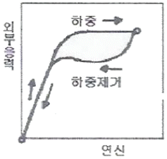
- 수소저장합금
- 탄소공구강
- 초단성합금
- 형상기억합금
(정답률: 51%)
20. 오스테나이트계 스테인리스강에서 나타나는 현상이 아닌 것은?
- 공식(Pirring)
- 입계부식(Intergranular Corrosion)
- 고온취성(High Temperature Brittleness)
- 응력부식균열(Strtss Conrrosion Cracking)
(정답률: 54%)
2과목: 금속조직
21. 기본적 상태도에서 그림과 같은 형태의 상태도는?
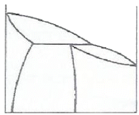
- 공정형
- 포정형
- 고상분리형
- 전율고용체험
(정답률: 77%)
22. 재결정에 영향을 주는 변수가 아닌 것은?
- 규칙도
- 온도
- 변형량
- 초기입자 크기
(정답률: 48%)
23. 베어나이트 변태에 대한 설명으로 틀린 것은?
- 오스테나이트에 대해 모재와의 결정학적 관련성이 없다.
- 변태에 따른 용질원자의 분포는 페라이트를 핵으로 하고 무확산에 의해 지배되는 일종의 슬립 변태이다.
- 변태에 따른 용질 원자의 분포는 C원자만 이동하자는 모재에 남는다.
- 조직 내에 포함되어 있는 탄화물은 변태온도 구역(고온)에서 Fe3C, 저온구역에서는 천이 탄화물이 존재한다.
(정답률: 51%)
24. 재결정(recystallization) 및 재결정 온도에 대한 설명으로 옳은 것은?
- 가공시간이 길수록 재결정 온도는 높아진다.
- 가공도가 클수록 재결정 온도는 높아진다.
- 재결정은 합금보다 순금속에서 더 빠르게 일어난다.
- 가공전의 결정립이 미세할수록 재결정 완료 후의 결정립은 조대하게 크다.
(정답률: 61%)
25. 순수한 에지(edge) 전위선 근처의 원자에 작용하지 않는 변형은?
- 인장변형
- 압축변형
- 뒤틀림변형
- 전단변형
(정답률: 64%)
26. Fick의 제2법칙 식으로 옳은 것은? (단, D는 확산계수이다.)
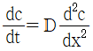
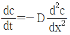
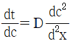
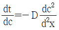
(정답률: 61%)
27. 다음 중 고용체강화에 대한 설명으로 옳은 것은?
- 용매원자와 용질원자 사이의 원자 크기의 차이가 적을수록 강화효과는 커진다.
- 일반적으로 용매원자의 격자에 용질원자가 고용되면 순금속보다 강한 합금이 되는 것이 고용체 강화이다.
- 용매원자에 의한 응력장과 가동전위의 응력장이 상호작용을 하여 전위의 이동을 원활하게 하여 재료를 강화하는 방법이다.
- Cu-Ni합금에서 구리의 강도는 40%Ni이 점가될 때까지 증가되는 반면 니켈은 60%Cu가 첨가될 때 고용체강화가 된다.
(정답률: 68%)
28. 순금속 중에서 같은 종류의 원자가 확산하는 현상을 어떤 확인이라 하는가?
- 상호확산
- 입계확산
- 자기확산
- 표면확산
(정답률: 81%)
29. 용질원자가 전위와 상호작용을 할 때 장범위에 걸쳐서 일어나는 작용은?
- 전기적 상호작용
- 적층결합 상호작용
- 강성률 상호작용
- 단범위 규칙도 상호작용
(정답률: 43%)
30. A, B 두 금속으로 된 합금의 경우 일반적으로 규칙격자를 만드는 방법이 틀린 것은?
- AB
- A3B
- A1.5B2
- AB3
(정답률: 75%)
31. 용질원자와 칼날전위의 상호작용을 무엇이라고 하는가?
- Oxidation pinnong
- Cotterell effect
- Frank-read source
- Peierls stess
(정답률: 79%)
32. 탄소강을 급냉하였을 때 생선된 마텐자이트 조직의 결정격자는?
- 단사입방격자(FCT)
- 체심정방격자(BCT)
- 면심입방격자(FCC)
- 조밀육방격자(HCP)
(정답률: 67%)
33. 다음 중 금속결정의 소성변형과 밀접한 관계로 선을 따라 결정 내에 존재하는 결합은?
- 전위
- 원자공공
- 크러디온
- 적층결함
(정답률: 86%)
34. 다음 중 침입형고용체를 만드는 것은?
- Mn
- Ni
- Cr
- H
(정답률: 58%)
35. 금속위 육방정계에서 대표적인 면이 아닌 것은?
- 기저면(Base plane)
- 각통면(Prismatic plane)
- 주조면(Cast plane)
- 각추면(Pyramidal plane)
(정답률: 63%)
36. 자기변태점을 갖지 않는 금속은?
- Cu
- Fe
- Co
- Ni
(정답률: 57%)
37. 금속재료의 전기전도도를 증가시키는 요인은?
- 온도상승에 의해
- 풀림에 의해
- 결함 존재에 의해
- 조성비가 50:50인 합금제조에 의해
(정답률: 46%)
38. BCC나 FCC 금속이 응고할 때 결정이 성장하는 우선 방향은?
- [100]
- [110]
- [111]
- [1010]
(정답률: 55%)
39. 대기압에서 공석강이 오스테나이트로부터 펄라이트로 변태를 완료하였다. 펄라이트 영역에서 자유도(F)는?
- 0
- 1
- 2
- 3
(정답률: 51%)
40. 순금속의 주괴(lngot) 조직에서 중심부와 표면부 사이에 열의 구배에 따라 생긴 조직은?
- 미세등축정
- 조대등축정
- 수지상정
- 주상정
(정답률: 52%)
3과목: 금속열처리
41. 강의 열처리 방법 중 A1 변태점 이하로 가열하는 방법은?
- 풀림(annealing)
- 불림(normaling)
- 담금질(quenching)
- 뜨임(tempering)
(정답률: 70%)
42. 고주파 담금질 방법을 설명한 것 중 틀린 것은?
- 유도자(coil)는 가열 면적이 좁을 때 효과적이다ㅑ.
- 코일과 고주파 발생장치의 연결리드는 간격을 좁게 해야 한다.
- 금속 가열방법이므로 전기로나 연소로 가열보다 30~50℃ 높여준다.
- 가열 면적이 길고 넓을 경우에는 코일수가 적은 것이 효과적이다.
(정답률: 66%)
43. 분위기 가스를 냉각시키면 어떤 온도에서 수분이 응축되어 미세한 물방울이 생기는 것을 무엇이라고 하는가?
- 영점
- 노점
- 결정
- 응고점
(정답률: 70%)
44. 열처리 담금질 작업 시 사용하는 냉각방법 중 가장 빠른 냉각능을 보이는 방법은?
- 노 내에서의 냉각
- 공기 중에서의 냉각
- 담금질유 중에서의 냉각
- 물 속에서의 교반 냉각
(정답률: 72%)
45. 강의 항온변태에 대한 설면 중 틀린 것은?
- 항온변태곡선 코(nose) 위에서 항온변태 시키면 마텐자이트가 형성된다.
- 항온변태곡선을 TTT(Time Temperature Transformation) 곡선이라고도 한다.
- 항온변태곡선 코(nose) 아래의 온도에서 항온변태 시키면 배어나이트가 형성된다.
- 오스테나이트화 한 후 A1 변태온도 이하의 온도로 급랭시켜 시간이 지남에 따라 오스테나이트의 변태를 나타내는 곡선을 항온변태곡선이라 한다.
(정답률: 53%)
46. 담금질 시 발생한 잔류오스테나이트에 대한 설명 중 옳은 것은?
- 전류오스테나이트는 상온에서 불안전한 상이다.
- 고함금강에서는 잔류 오스테나이트가 존재하지 않는다.
- 퀜칭시 냉각속도를 지연시키면 잔류오스테나이트가 감소한다.
- 0.6%C 이상의 탄소강에서는 M1 온도가 상온 이하로 내려가지 않기 때문에 잔류오스테나이트가 없다.
(정답률: 63%)
47. 백선 주물의 시멘타이트와 펄라이트를 흑연화 시킬 목적으로 하는 가단주철 열처리는?
- 백심 가단주철 열처리
- 흑심 가단주철 열처리
- 펄라이트 가단추철 열처리
- 페라이트 가단추철 열처리
(정답률: 54%)
48. 강의 열처리시 경화능에 대한 설명으로 틀린 것은?
- 임계냉각속도가 큰 강은 경화가 잘되지 않는다.
- 담금질 경도는 탄소량에 따라 결정된다.
- 질량효과는 합금강이 탄소강보다 크다.
- 담금질 깊이는 탄소량, 합금원소의 영향이 크다.
(정답률: 51%)
49. 열처리로의 온도제어 방법 중 승온, 유지, 냉각 등을 자동적으로 실시하는 온도 제어 방식은?
- ON-OFF식
- 비례 제어식
- 정치 제어식
- 프로그램 제어식
(정답률: 81%)
50. 인상담금질(Time Quenching)에서 인상시기를 설명한 것 중 틀린 것은?
- 기름의 기포 발생이 정지했을 때 꺼내어 공냉한다.
- 진동의 물소리가 정한 순간 꺼내어 유냉 또는 공냉한다.
- 화색火(色)이 나타나지 않을 때까지 2배의 시간만큼 물속에 담근 후 꺼내어 공냉한다.
- 가열물의 직격 또는 두께 1mm당 10초 동안 수냉한 후 유냉 또는 공냉한다.
(정답률: 66%)
51. 공석강의 연속냉각 변태에서 변태개시 온도가 가장 낮은 조직은?
- 펄라이트
- 소르바이트
- 마텐자이트
- 트루스타이트
(정답률: 54%)
52. 두랄루민과 같은 비철합금에서 강도를 높이는 열처리 방법은?
- 용체화처리 및 시효처리
- 서브제로처리
- 항온변태처리
- 균질화처리
(정답률: 73%)
53. Ms 이상인 적당한 온도(약 250~450℃)로 유지한 염욕에 당금질하고 과냉각의 오스테나이트 변태가 끝날 때까지 항온으로 유지하여 베이나이트 조직이 얻어지는 열처리 방법은?
- 마퀜칭
- Ms퀜칭
- 오스템퍼링
- 오스포잉
(정답률: 67%)
54. 심냉처리에 따른 균열의 원인으로 틀린 것은?
- 담금질 온도가 너무 높을 때
- 강재의 다듬질 정도가 좋을 때
- 담금질한 강재에 탈탄층이 존재할 때
- 심냉처리의 온도가 불균일하거나 정확하지 않을 때
(정답률: 81%)
55. 특수표면처리 방법 줄 강재 표면에 엷은 황화층을 형성 시키는 방법으로 주로 마찰저항을 적게 하여 윤활성을 향상시키는 효과가 있는 처리법은?
- 침황처리
- 침붕처리
- 염욕코팅처리
- 산화피막처리
(정답률: 79%)
56. 진공열처리의 특징을 설명한 것 중 틀린 것은?
- 열처리 변형이 증가한다.
- 탈지 청정화 적용을 한다.
- 열처리 후가공의 생략이 가능하다.
- 금속의 산화 방지가 가능하다.
(정답률: 64%)
57. 강을 0℃이하의 온도에서 서브제로 처리할 때의 조직 변화로 옳은 것은?
- 잔류 펄나이트→마텐자이트
- 잔류 오스테나이트→마텐자이트
- 잔류 소르나이트→마텐자이트
- 잔류 트루스타이트→마텐자이트
(정답률: 84%)
58. 표면경화 열처리법 중 진공로 내에서 글로우(glow)방전을 발생시켜 N2, H2 및 기타 가스의 단독, 혼합 가스의 분위기에서 N을 표면에 확산시키는 표면처리법은?
- 침탄 질화
- 가스 질화
- 이온 질화
- 염욕 연질화
(정답률: 50%)
59. 인장응력 또는 잔류응력을 감소시키는 방법이 아닌 것은?
- 저온 풀림
- 용체화 처리
- 쇼트 피닝법
- 심랭처리 급열법
(정답률: 43%)
60. 침탄 깊이와 관련이 가장 적은 것은?
- 침탄제의 종류
- 가열 온도
- 가열로의 종류
- 유지 시간
(정답률: 81%)
4과목: 재료시험
61. 구리판, 알루미늄판 및 기타 판재를 가압 성형하여 시험하는 방법에 해당하는 것은?
- 마찰시험
- 커핑시험
- 압축시험
- 크리프시험
(정답률: 62%)
62. 일반 탄소강의 현미경 조직검사를 위해 주로 사용되는 부식액은?
- FIP 용액
- HCL+질산
- 질산+알콜
- 인산+황산
(정답률: 74%)
63. 금속의 조직검사의 결정입도 시험법이 아닌 것은?
- 비교법
- 절단법
- 평적법
- 면적측정법
(정답률: 51%)
64. 충격 시험에 대한 설명으로 틀린 것은?
- 충격 시험은 재룡의 인성과 취성의 정도를 판정하는 시험이다.
- 금속재료 충격시험편의 노치는 V자형, U자형이 있다.
- 열처리한 재룡의 평가를 위한 시험편은 열처리 전에 기계가공을 한다.
- 충격값이란 충격 에너지를 시험편의 노치부 단면적으로 나눈 값으로 단위는 kgfㆍm/cm2이다.
(정답률: 62%)
65. 노치 효과에 대한 설명으로 옳은 것은?
- 노치계수(β)는 1보다 작다.
- 형상계수(α)는 노치계수(β)보다 크다.
- 노치에 둔한 재료에서는 노치민감계수(η)가 z(zero)에 접근한다.
- 노치민감계수의 값은 노치에 민감하면 0이 되고, 둔하면 1이된다.
(정답률: 52%)
66. 펀치 프레스에서 두께 2mm의 연강판에 지름 30mm의 구멍을 뚫고자 할 때 펀치에 작용한 전단하중(kgf)은? (단, 연강판의 전단강도는 40kgf/mm2이다.)
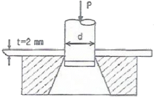
- 약 5450kgf
- 약 6535kgf
- 약 7540kgf
- 약 9635kgf
(정답률: 51%)
67. 다음 중 알루민산영 개재물의 종류에 해당하는 것은?
- 그룹 A형
- 그룹 B형
- 그룹 C형
- 그룹 D형
(정답률: 72%)
68. X-ray 회절법을 사용하는 용도로 적합한 것은?
- 개재물의 탐상
- 압축변형의 측정
- 주물의 결함 탐상
- 결정 격자구조의 측정
(정답률: 62%)
69. 마모시험에 영향을 미치는 인자들에 대한 설명으로 틀린 것은?
- 접촉 하중이 증가할수록 마모량은 증가한다.
- 접촉면 표면이 거칠수록 마모량은 증가한다.
- 미끄럼 속도는 어느 임계속도까지는 마모량은 증가한다.
- 마찰면의 실제온도가 아주 높아지면 마모량이 급속히 감소하여 소착은 일어나지 않는다.
(정답률: 76%)
70. 다음 중 비틀림 시험에 대한 설명으로 옳은 것은?
- 비틀림 시험의 주목적은 재료에 대한 강성계수와 비틀림 강도의 특정에 있다.
- 비교적 굵은 선재의 비틀림 시험에서는 응력을 측정하여 시험 결과를 얻는다.
- 비틀림 시험편의 양단은 고정하기 쉽게 시험부보다 얇게 만든다.
- 비틀림 각도 측정법은 펜듀럼식, 탄성식, 레버식이 있다.
(정답률: 63%)
71. 인장시험에서 단면 수축률을 산출하는 식으로 맞는 것은? (단, A0=시험 전 시편의 평행부 단면적, A1=시험 후 시편의 파단부 단면적이다.)
- 단편수축률 =
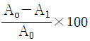
- 단편수축률 =
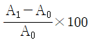
- 단편수축률 =
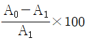
- 단편수축률 =
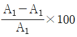
(정답률: 65%)
72. 자동화재탐지설비에 해당되지 않는 것은?
- 수신기
- 발신기
- 감지기
- 분사헤드
(정답률: 70%)
73. 자분탐상검사법 중 선형 자계에 의한 결함 검출 검사법은?
- 극간법
- 프로드법
- 축 통전법
- 자속 관통법
(정답률: 63%)
74. 크리트(creep) 3단계의 순서로 옳은 것은?
- 제1단계 : 감속크리프→제 2단계 : 정상크리프→제2단계 : 가속크리프
- 제1단계 : 가속크리프→제 2단계 : 정상크리프→제2단계 : 감속크리프
- 제1단계 : 정상크리프→제 2단계 : 가속크리프→제2단계 : 감속크리프
- 제1단계 : 정상크리프→제 2단계 : 감속크리프→제2단계 : 가속크리프
(정답률: 74%)
75. 음향방출검사(AE)에 대한 설명으로 틀린 것은?
- 한 번에 전체를 검사할 수 있다.
- 시험 결과에 대한 재현성이 없다.
- 정적인 결함의 검출에 우수하다.
- 결함의 활동성을 감지하는 시험법이다.
(정답률: 46%)
76. 셜퍼 프린트에 의한 황편석의 분류기호 중 중심부 편석을 나타내는 것은?
- SN
- SI
- SC
- SO
(정답률: 76%)
77. 주사전자현미경으로 시료를 관찰할 때 특정 이 물질을 정성, 정량 하고자 할 때 어떤 분석 장비를 전자현미경에 부착하여 사용하는가?
- EDS
- EELS
- EBSD
- lon-Coater
(정답률: 74%)
78. 브리넬 경도 시험의 특징과 용도에 대한 설명으로 틀린 것은?
- 일반적으로 압입자에 의한 하중 유지 시간은 약 1-~15초 이다.
- 얇은 재료나 침탄강, 질화강 등의 측정에 적합하다.
- 시험편 윗면의 상태에 의한 측정치에 큰 오차는 방생하지 않는다.
- 큰 압입자국을 얻기 때문에 불균일한 재료의 평균적인 경도값을 측정할 수 있다.
(정답률: 46%)
79. 인장시험에서 하중을 제거시키면 변형이 원상태로 되돌아 가는 극한의 응력 값은?
- 항복점
- 최대하중
- 연신하중
- 탄성한계
(정답률: 81%)
80. X-선에 개인 피폭되었는지의 여부를 측정 또는 모니터하는 수단이 아닌 것은?
- 필름배지
- 탐촉케이블
- 열형광선량계
- 형광유리선량계
(정답률: 61%)